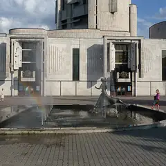
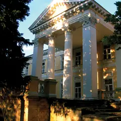
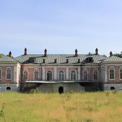
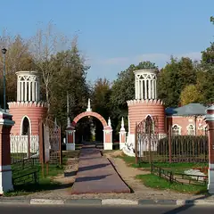

Районы · ЮЗАО
Куда сходить на юго-западе Москвы
32 места на юго-западе Москвы: 12 компьютерных клубов, 6 мест для прогулки, 4 бара и 3 развлечения. Например, «Битцевский лес», «Палеонтологический музей» и «Большой Московский цирк». 14 готовых планов начинаются здесь. Больше всего мест у станций «Академическая», «Беляево» и «Новаторская».
- 32 места
- 14 планов
- 12 клубов
Места 20
Новоясеневский просп., 21 к3
Огромный лес на юго-западе: экотропы, родники и конноспортивный комплекс.
Подробнее и маршрут: Битцевский лесПозвать сюда: Битцевский лес
Фото: Stolbovsky, CC BY-SA 4.0 · Wikimedia Commons
Профсоюзная ул., 123
Скелеты динозавров и древних животных в здании-«крепости» у Тёплого Стана.
Подробнее и маршрут: Палеонтологический музейПозвать сюда: Палеонтологический музей
Фото: MikSed, CC BY-SA 4.0 · Wikimedia Commons
просп. Вернадского, 7
Огромный цирк на проспекте Вернадского со сменными манежами — от водного до ледового.
Подробнее и маршрут: Большой Московский циркПозвать сюда: Большой Московский цирк
Фото: A.Savin, Free Art License · Wikimedia Commons
ул. Вавилова, 57
Музей эволюции с чучелами животных со всего мира и интерактивными залами.
Подробнее и маршрут: Дарвиновский музейПозвать сюда: Дарвиновский музей
Фото: Cybersky, CC BY-SA 3.0 · Wikimedia Commons

просп. Вернадского, 5
Детский музыкальный театр на Вернадского: опера и балет для всей семьи.
Подробнее и маршрут: Театр Наталии СацПозвать сюда: Театр Наталии Сац
Фото: El Pantera, CC BY-SA 2.5 · Wikimedia Commons

Профсоюзная ул., 123Б
Усадьба в Ясеневе, где умер философ Владимир Соловьёв: парк, пруды и старинный храм.
Подробнее и маршрут: Усадьба УзкоеПозвать сюда: Усадьба Узкое
Фото: Sergey Galchenkov (Сергей Галченков), CC BY-SA 3.0 · Wikimedia Commons

Ясенево, у Битцевского леса
Старинная усадьба с парком на краю Битцевского леса.
Подробнее и маршрут: Усадьба ЯсеневоПозвать сюда: Усадьба Ясенево
Фото: Stolbovsky, CC BY-SA 4.0 · Wikimedia Commons

ул. Академика Пилюгина
Усадьба Воронцово с каскадом прудов и тихими аллеями на юго-западе.
Подробнее и маршрут: Воронцовский паркПозвать сюда: Воронцовский парк
Фото: Maria Ushanova, CC BY-SA 4.0 · Wikimedia Commons
ул. Академика Понтрягина, 14
Новое
Современные бани в Южном Бутове: безлимитный вход в мужской разряд от 4 000 ₽, в женский — от 3 500 ₽. Русская парная, купели, своя парковка.
Подробнее и маршрут: Потаповские баниПозвать сюда: Потаповские бани
Ленинский просп., 105
Новое
Киноконцертный зал, открытый в 2005-м по инициативе Эльдара Рязанова: кинопоказы, творческие вечера и концерты. Спокойное атмосферное место на юго-западе.
просп. 60-летия Октября, 20
Новое
Недорогой ирландский паб рядом с «Академической»: матчи Лиги чемпионов и не только, живая музыка по вечерам. В пятницу и субботу открыт до 5 утра.
Подробнее и маршрут: Джоли ЛепреконПозвать сюда: Джоли Лепрекон
Голубинская ул., 16
Горки, волны, бани и термы на весь день: будни от 3 290 ₽, выходные от 3 790 ₽.
МКАД, 36-й км, 1А
Старая усадьба с прудами на краю Битцевского леса — тихая прогулка на юге Москвы.
Подробнее и маршрут: Усадьба Знаменское-СадкиПозвать сюда: Усадьба Знаменское-Садки
ул. Дмитрия Ульянова, 20, корп. 1
Новое
Ирландский паб у «Академической»: десять экранов, футбол и хоккей со звуком, расписание трансляций публикуют заранее. По понедельникам — турнир по кикеру.
Подробнее и маршрут: Billy McDanielПозвать сюда: Billy McDaniel
Ленинский просп., 95
Новое
Простой районный паб у «Новаторской»: больше десятка кранов с чешским, немецким и бельгийским пивом, четыре экрана для больших матчей, по выходным аниматоры для детей.
Профсоюзная ул., 104
Новое
Ирландский паб прямо у «Беляево»: экраны в каждом зале, матчи идут со звуком, есть веранда и зал с камином. Расписание трансляций лучше уточнить при брони.
Ленинский просп., 61/1
Новое
VR-клуб на Ленинском: шутеры, хорроры и симуляторы — от 1 000 ₽/ч в будни, VR-квесты Ubisoft для двоих — 4 000 ₽/ч. Есть авиасимулятор. До полуночи.
Научный пр., 6А
Новое
Падел у «Калужской»: корт на четверых — 4 000–5 000 ₽/ч, сингл-корт для игры один на один — 3 000 ₽. Есть пушка для мячей и групповые тренировки.
Подробнее и маршрут: Vamos Padel ClubПозвать сюда: Vamos Padel Club
Симферопольский бул.
Русская кухня в Зюзине — повод не ехать в центр.
Подробнее и маршрут: Русское подворьеПозвать сюда: Русское подворье
Тёплый Стан
Холмистый лес и поля, где находится самая высокая точка Москвы.


Готовые планы 14
- Палеонтологический музей · Музей · м. Тёплый Стан
- 11 минут пешкомColizeum Тёплый Стан · Компьютерный клуб
Скелеты динозавров в Палеонтологическом музее, а через 11 минут пешком компы Colizeum у самого выхода из «Тёплого Стана».
Открыть план: Динозавры и катка в Тёплом СтанеПозвать сюда: Динозавры и катка в Тёплом Стане
Фото: MikSed, CC BY-SA 4.0 · Wikimedia Commons
- Битцевский лес · Природный парк · м. Новоясеневская
Длинная прогулка по экотропам Битцевского леса к родникам: собаке на поводке есть где нагуляться, а вам — поговорить без шума города.
Открыть план: Битца с собакойПозвать сюда: Битца с собакой
Фото: Stolbovsky, CC BY-SA 4.0 · Wikimedia Commons
- Большой Московский цирк · Цирк · м. Университет
Огромный цирк на Вернадского со сменными манежами.
Открыть план: Большой циркПозвать сюда: Большой цирк
Фото: A.Savin, Free Art License · Wikimedia Commons
- Палеонтологический музей · Музей · м. Тёплый Стан
Скелеты динозавров в здании-крепости — взрослым тоже интересно.
Открыть план: ДинозаврыПозвать сюда: Динозавры
Фото: MikSed, CC BY-SA 4.0 · Wikimedia Commons
- Эльдар · Киноконцертный зал · м. Новаторская
- 9 минут пешкомРынок на Ленинском · Рынок и фудхолл
Кинопоказ или творческий вечер в «Эльдаре», открытом по инициативе Эльдара Рязанова, а через проспект — Рынок на Ленинском с фудкортом и большой террасой наверху.
Открыть план: Зал Рязанова и рынок на ЛенинскомПозвать сюда: Зал Рязанова и рынок на Ленинском
- Театр Наталии Сац · Детский музыкальный театр · м. Университет
Детский музыкальный театр на Вернадского — опера и балет с младшими.
Открыть план: Опера для всей семьиПозвать сюда: Опера для всей семьи
Фото: El Pantera, CC BY-SA 2.5 · Wikimedia Commons
- Битцевский лес · Природный парк · м. Новоясеневская
Большой круг по экотропам Битцевского леса мимо родников — часа на два с половиной. Самые выносливые доходят до КСК «Битца» на северной опушке и садятся в седло: конную прогулку бронируют заранее.
Открыть план: Поход по осенней БитцеПозвать сюда: Поход по осенней Битце
Фото: Stolbovsky, CC BY-SA 4.0 · Wikimedia Commons
- Дарвиновский музей · Музей · м. Академическая
Дарвиновский музей — залы с чучелами со всего мира и интерактивом. Немного жутко и очень красиво.
Открыть план: Совы, чучела и эволюцияПозвать сюда: Совы, чучела и эволюция
Фото: Cybersky, CC BY-SA 3.0 · Wikimedia Commons
- Усадьба Узкое · Усадьба · м. Коньково
Тихая усадьба в Ясеневе: парк, пруды и старинный храм. Неспешная осенняя прогулка вдвоём.
Открыть план: Усадьба УзкоеПозвать сюда: Усадьба Узкое
Фото: Sergey Galchenkov (Сергей Галченков), CC BY-SA 3.0 · Wikimedia Commons
- Усадьба Ясенево · Усадьба · м. Новоясеневская
Старинная усадьба с парком на краю Битцевского леса.
Открыть план: Усадьба ЯсеневоПозвать сюда: Усадьба Ясенево
Фото: Stolbovsky, CC BY-SA 4.0 · Wikimedia Commons
- Потаповские бани · Баня · м. Бунинская аллея
Потаповские бани в Южном Бутове: безлимитный вход в мужской разряд, русская парная и купели, а машину есть где оставить.
Открыть план: Безлимитная баня в БутовеПозвать сюда: Безлимитная баня в Бутове
- Мореон · Аквапарк и термы · м. Ясенево
Горки, волны и баня в одном месте — отличный выходной компанией.
Открыть план: Аквапарк на весь деньПозвать сюда: Аквапарк на весь день
- Усадьба Знаменское-Садки · Усадьба и парк · м. Лесопарковая
Старая усадьба с прудами на краю Битцевского леса — тихая осенняя прогулка на юге Москвы.
Открыть план: Старая усадьба у БитцыПозвать сюда: Старая усадьба у Битцы
- Мореон · Аквапарк и термы · м. Ясенево
Целый день в термах, банях и на горках — отдых, после которого хочется спать.
Компьютерные клубы 10 из 12
Ленинский просп., 123В (ТРЦ «Галеон»)
Круглосуточно
Круглосуточный клуб в ТРЦ «Галеон» у «Тропарёва»: общий зал, буткемпы и PlayStation 5.
Подробнее и маршрут: Colizeum ГалеонПозвать сюда: Colizeum Галеон
Нахимовский просп., 9А
Круглосуточно
Круглосуточный клуб в полминуте от метро «Нахимовский проспект».
Подробнее и маршрут: Colizeum НахимовскийПозвать сюда: Colizeum Нахимовский
Профсоюзная ул., 102, стр. 1 (ТЦ «Ареал», 3 этаж)
Клуб на третьем этаже ТЦ «Ареал» у «Беляева»: компы на RTX 5070 и буткемпы.
Подробнее и маршрут: Colizeum БеляевоПозвать сюда: Colizeum Беляево
Профсоюзная ул., 61А (ТЦ «Калужский»)
Клуб в ТЦ «Калужский» у одноимённого метро: игровые ПК, буткемпы и PlayStation 5.
Подробнее и маршрут: Colizeum КалужскийПозвать сюда: Colizeum Калужский
Ленинский просп., 67
Уютная арена на Ленинском: буткемп на RTX 5070 Ti с мониторами 380 Гц, зона на RTX 5070 и два приватных ПК.
Подробнее и маршрут: Colizeum ЛенинскийПозвать сюда: Colizeum Ленинский
ул. Гарибальди, 23 (ТЦ «Панорама», 2 этаж)
Клуб в ТЦ «Панорама» на «Новых Черёмушках»: общий зал на RTX 2060, буткемп на RTX 3070.
Подробнее и маршрут: Colizeum ПанорамаПозвать сюда: Colizeum Панорама
Профсоюзная ул., 129А
Клуб у самого выхода из «Тёплого Стана».
Подробнее и маршрут: Colizeum Тёплый СтанПозвать сюда: Colizeum Тёплый Стан
Балаклавский просп., 16
Клуб у «Чертановской»: игровые ПК, буткемпы и PlayStation 5.
Подробнее и маршрут: Colizeum ЧертановскаяПозвать сюда: Colizeum Чертановская
Венёвская ул., 6 (ТЦ «Витте Молл»)
Клуб в ТЦ «Витте Молл» в Южном Бутове: общий зал, буткемпы и PlayStation 5.
Подробнее и маршрут: Colizeum Южное БутовоПозвать сюда: Colizeum Южное Бутово
Ясногорская ул., 7А (ТЦ «Этаж», 3 этаж)
Клуб на третьем этаже торгового центра у «Ясенева»: игровые ПК, буткемпы и консоли.
Подробнее и маршрут: Colizeum ЯсеневоПозвать сюда: Colizeum Ясенево
Как позвать
- Выбери план, место или событие — в карточке адрес, цены и маршрут в Яндекс Картах.
- Нажми «Позвать сюда» — соберётся приглашение-игра для свидания или голосование для компании.
- Отправь ссылку в любой мессенджер: тебе ответят, а компания отметит, куда и когда может. Бесплатно и без регистрации.